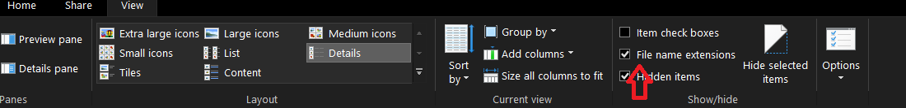

Lab 0 Development Environment Setup
For this lab, you will be setting up your development environment which
will allow you to implement your other labs and assignments. In many
workplaces, you will be expected to set up your own development
environment so this is good practice.
Part 1: Install Code Editor
The most common code editor for websites and web applications is Visual
Studio Code. It is easy to install and use, light on resources (you don't
need a powerful laptop), and the best editor for this course.
-
In your favourite browser, navigate to
https://code.visualstudio.com/
-
Click the "Download for Windows Stable Build" button. The executable
installer will automatically download. Wait for the download to finish.
-
Run the installer file. (The file is named VSCodeUserSetup-x64-[version
number].)
-
Follow the steps of the installer. Accept all of the defaults - just
keep clicking the "Next" button. If need more help on this step, here
are
more detailed instructions.
-
If all goes well, VS Code application will automatically start. You can
delete the installer file since we don't need it anymore.
Part 2: Add Extensions to VS Code
Some applications allow for customizations through the use of extensions
or add-ons by giving us additional functionality. The VS Code Marketplace
has thousands of extensions supporting many different languages. In this
part, we are going to install a few different extensions to make our life
better for developing web pages with HTML, CSS, JavaScript.
- If VS Code isn't running, start VS Code.
-
Click the Extensions icon in the Activity Bar on the side of VS Code to
open up Extensions View.

-
Prettier - Code formatter. The Prettier extension enforces a consistent
style by parsing your code and re-printing it with its own rules that
take the maximum line length into account, wrapping code when necessary.
-
In the Extensions sidebar, search for "prettier" and install
"Prettier - Code formatter".
-
Now let's configure Prettier. Open VS Code settings by clicking on
File -> Preferences -> Settings or press ctrl + ,
-
In the settings search box, search for "Default formatter" and
choose "Prettier - Code formatter" from the list.
-
In the settings search box, search for "Format on Save" and
check the checkbox.
- Close the Settings tab when you are done.
-
Live Preview. The Live Preview extension hosts a local server for you to
preview your web projects on. This extension shows the result of your
code right inside of VS Code so you don't have to use a browser.
-
In the Extensions sidebar, search for "live preview" and install
"Live Preview".
-
There are few other optional extensions that you may consider
installing. Search for these extensions and decide for yourself if you
want them. You can install and uninstall extensions to try them out too.
Do not go overboard with extensions. Too many extensions can slow down
VS Code or cause conflicts.
Part 3: Keeping Everything Organized
In this part, we are going to create a number of folders to keep the
projects organized. Then, we are going to create and test a basic web
page.
-
Recommendation: storing your files in a cloud drive will help prevent
accidental data loss. Sign up and install a cloud drive like OneDrive,
Google Drive, or Dropbox before continuing. Ensure you download the
desktop application that integrates with Windows File Explorer. By the
way, SAIT provides you with a free 1 TB OneDrive account through
Microsoft 365.
more details
-
Open Windows File Explorer. You can do this by hitting the Windows key
on your keyboard and searching for "file explorer" or press [Windows
key] + e
-
Click on "View" in the top menu and ensure that "File name extensions"
and "Hidden items" are checked. Consider yourself a power user now!

-
Find a suitable location to store your labs and assignments, e.g.
Documents or a cloud drive folder.
- Create a folder called CPRG-213
-
Inside of the CPRG-213 folder create the following folders:
- lab-0
- lab-1
- lab-2
- lab-3
- lab-4
- lab-5
- lab-6
- assignment-1
- assignment-2
- assignment-3
Part 4: Testing Your Development Environment
- Open VS Code
-
Choose File -> Open Folder and open the lab-0 folder you just created.
-
If you get a warning message about trusting the contents, check the
checkbox "Trust the authors of the parent folder" and click the button
"Yes, I trust the authors". You should trust the authors because you are
the author!
- In the left sidebar "Explorer", click the button "New File..."
- Enter the file name: index.html
-
Copy and paste the following HTML code into index.html.
<!DOCTYPE html>
<html lang="en">
<head>
<title>Hello World!</title>
</head>
<body>
<h1>Hello World!</h1>
</body>
</html>
- Save the document with either File -> Save or Ctrl+s
-
Click the "Show Preview" button in the top-right corner of VS Code.
- Change the text to say "Hello [your name]" with your name.
- Save the document.
-
Use Windows File Explorer and find the file index.html. Double click on
the file to view in your default browser.
Congratulations on correctly setting up your development environment for
this course!
There is nothing to submit to Brightspace.